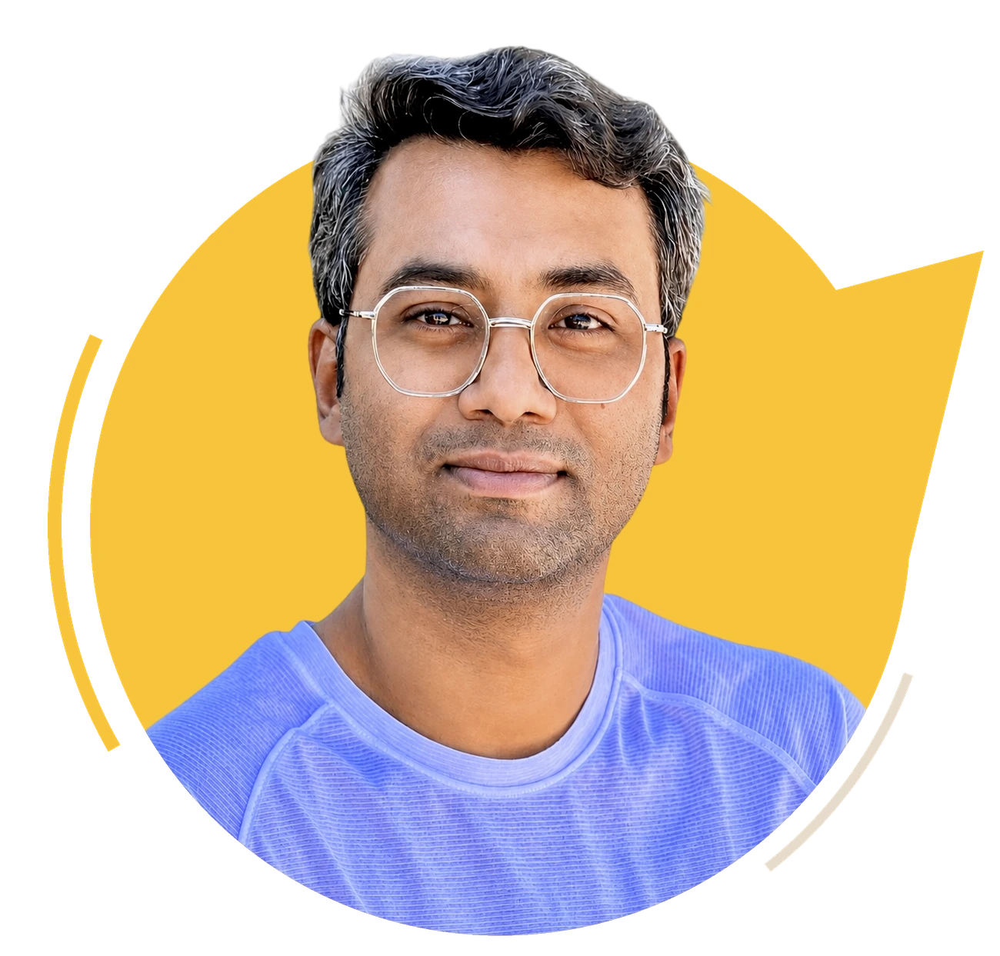
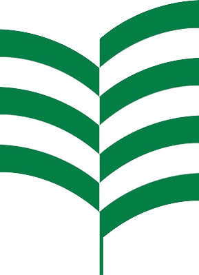
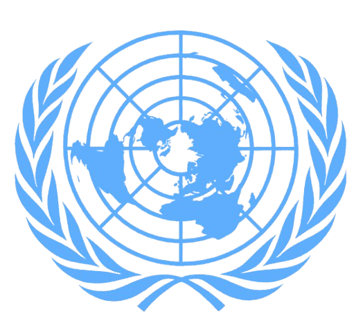
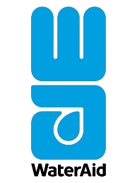

Hey there 👋
I'm Mydul, a technical project manager who turned nanotech engineer into sensor product leader.
I plan and steer R&D projects for magnetic sensors at Magnetic Sense GmbH in Stuttgart. M.Sc. in Nanosciences, cleanroom roots, two projects that led to a patent.
Open to a conversation?
Worked & studied at:
 Magnetic Sense GmbH
Magnetic Sense GmbH
 Universität Siegen
Universität Siegen
 ITS Industriebedarf GmbH
ITS Industriebedarf GmbH
Magnetic Sense GmbH
Universität Siegen

Green University of Bangladesh
ITS Industriebedarf GmbH
Volunteered & engaged with:
 Amnesty International
Amnesty International
 Bishwo Shahitto Kendro
Bishwo Shahitto Kendro
 British Council
British Council
Amnesty International

Model United Nations
Bishwo Shahitto Kendro

WaterAid
British Council